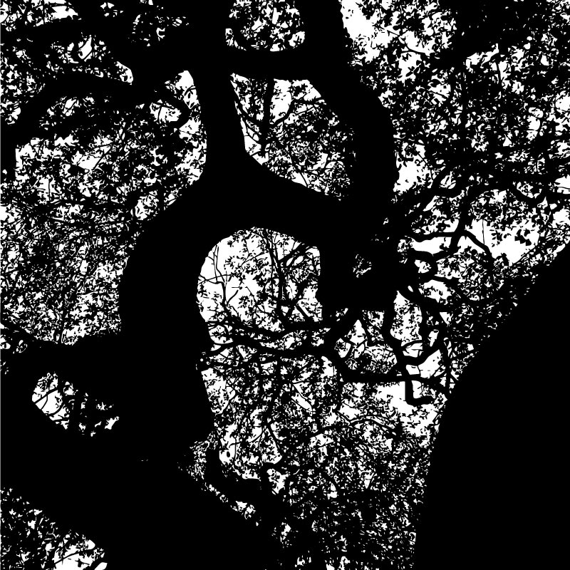
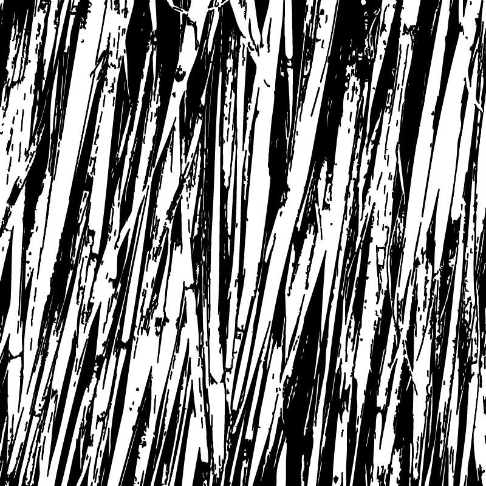
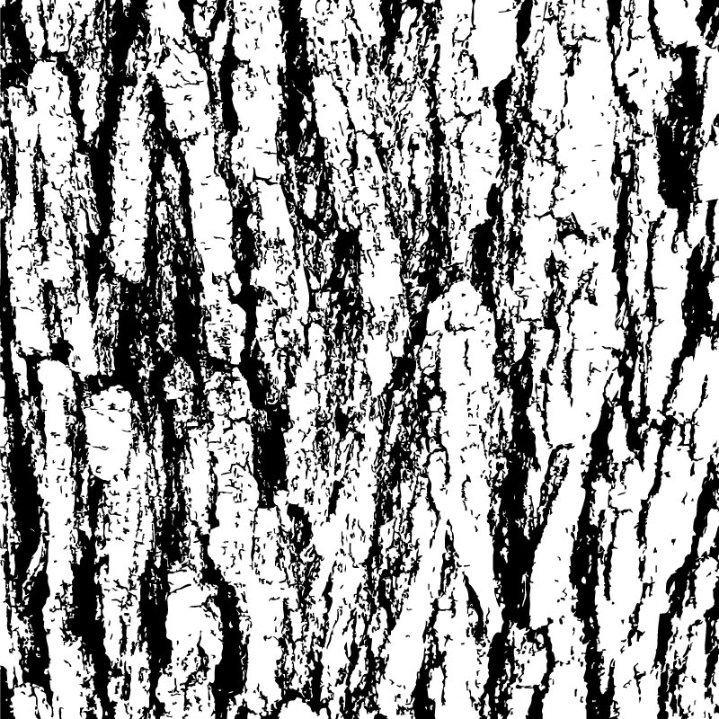
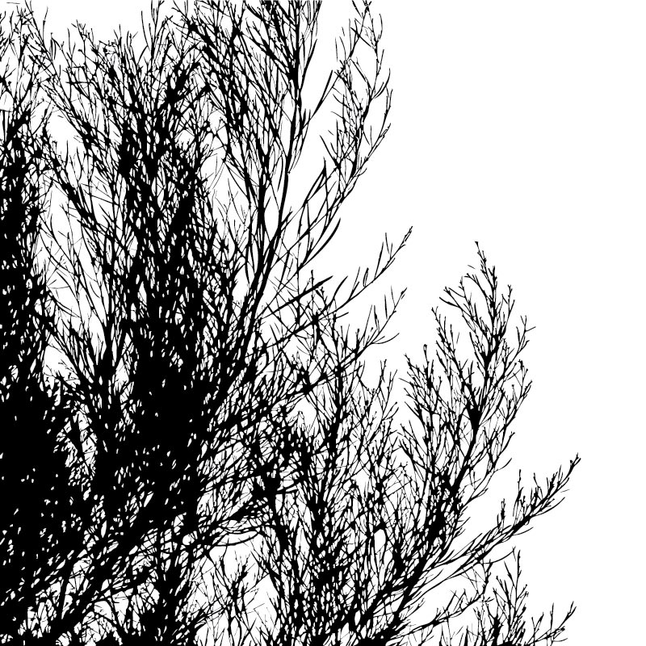
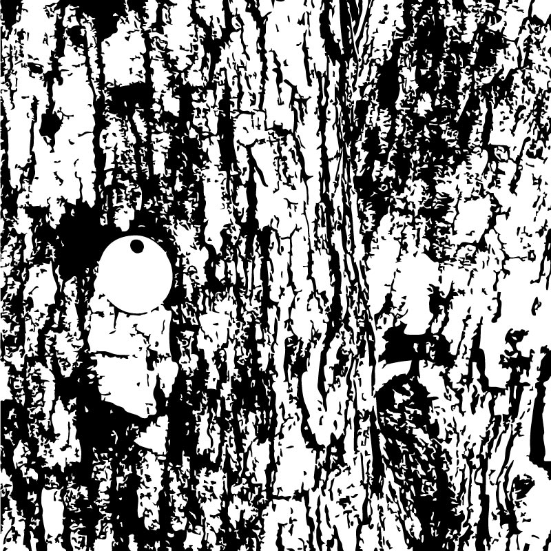
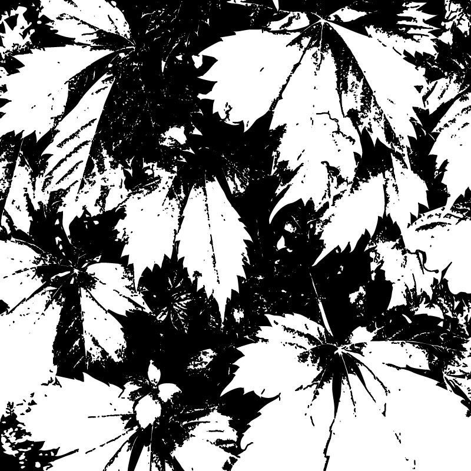
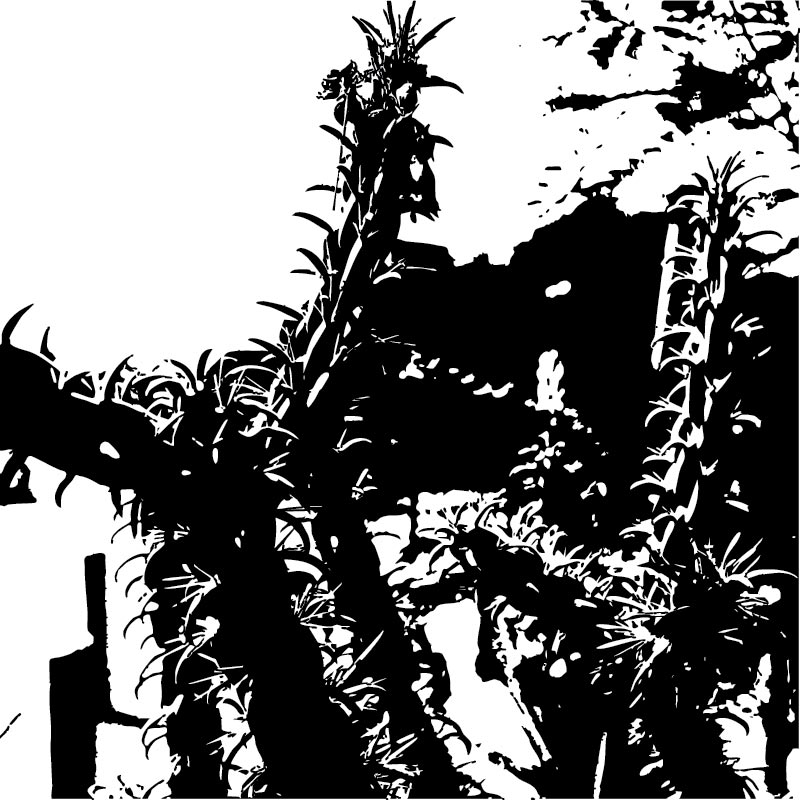
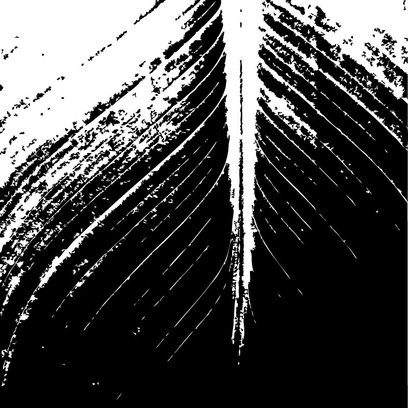
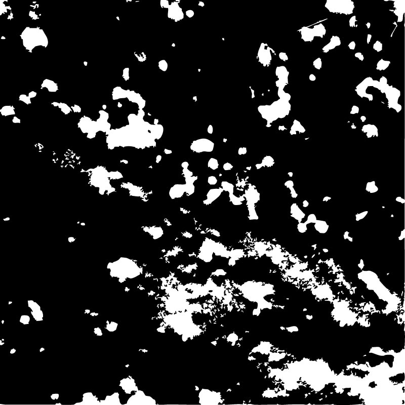

PLANT 1
Location: Our first stop on our walk with Cat
PLANT 2
Location: At the back corner of the VAC near science and history museum

PLANT 4
Location: By the back (east-facing) entrance to the VAC
PLANT 5
Location: At the back corner of the VAC near science and history museum
PLANT 6
Location: In the VAC courtyard
PLANT 7
Location: Between the VAC and science and history museum
PLANT 8
Location: In the median between the VAC and DKR
PLANT 9
Location: In front of DKR
PLANT 10
Location: In the median between the VAC and DKR
